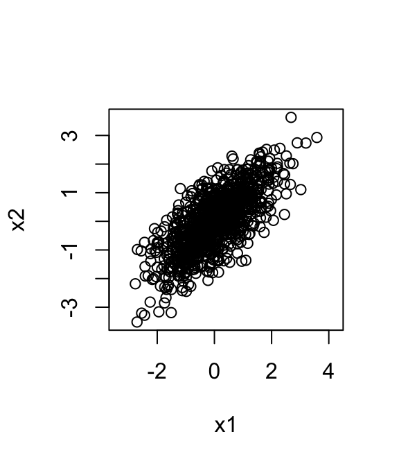

Last updated: 2026-02-11
Checks: 7 0
Knit directory: fiveMinuteStats/analysis/
This reproducible R Markdown analysis was created with workflowr (version 1.7.1). The Checks tab describes the reproducibility checks that were applied when the results were created. The Past versions tab lists the development history.
Great! Since the R Markdown file has been committed to the Git repository, you know the exact version of the code that produced these results.
Great job! The global environment was empty. Objects defined in the global environment can affect the analysis in your R Markdown file in unknown ways. For reproduciblity it’s best to always run the code in an empty environment.
The command set.seed(12345) was run prior to running the
code in the R Markdown file. Setting a seed ensures that any results
that rely on randomness, e.g. subsampling or permutations, are
reproducible.
Great job! Recording the operating system, R version, and package versions is critical for reproducibility.
Nice! There were no cached chunks for this analysis, so you can be confident that you successfully produced the results during this run.
Great job! Using relative paths to the files within your workflowr project makes it easier to run your code on other machines.
Great! You are using Git for version control. Tracking code development and connecting the code version to the results is critical for reproducibility.
The results in this page were generated with repository version 93f43b9. See the Past versions tab to see a history of the changes made to the R Markdown and HTML files.
Note that you need to be careful to ensure that all relevant files for
the analysis have been committed to Git prior to generating the results
(you can use wflow_publish or
wflow_git_commit). workflowr only checks the R Markdown
file, but you know if there are other scripts or data files that it
depends on. Below is the status of the Git repository when the results
were generated:
Ignored files:
Ignored: analysis/bernoulli_poisson_process_cache/
Note that any generated files, e.g. HTML, png, CSS, etc., are not included in this status report because it is ok for generated content to have uncommitted changes.
These are the previous versions of the repository in which changes were
made to the R Markdown (analysis/mvnorm_eigen.Rmd) and HTML
(docs/mvnorm_eigen.html) files. If you’ve configured a
remote Git repository (see ?wflow_git_remote), click on the
hyperlinks in the table below to view the files as they were in that
past version.
| File | Version | Author | Date | Message |
|---|---|---|---|---|
| Rmd | 93f43b9 | Peter Carbonetto | 2026-02-11 | wflow_publish("analysis/mvnorm_eigen.Rmd") |
| Rmd | e36a454 | Peter Carbonetto | 2026-02-11 | A few updates to the mvnorm_eigen vignette. |
| Rmd | 4c01262 | Peter Carbonetto | 2026-02-11 | Generated pdf version of mvnorm_eigen v ignette. |
| html | fb4e485 | Matthew Stephens | 2021-03-01 | Build site. |
| Rmd | 669e3a7 | Matthew Stephens | 2021-03-01 | workflowr::wflow_publish("mvnorm_eigen.Rmd") |
See here for a PDF version of this vignette.
You should be familiar with the multivariate normal distribution, and with the eigen-decomposition for symmetric positive semi-definite (PSD) matrices.
Getting an intuition for what the \(p\)-dimensional multivariate normal distribution \(N_p(\mu, \Sigma)\) “looks like” can be difficult. For \(p = 1\) or 2, things are not too bad; we can directly visualize a univariate normal distribution by plotting its density, and visualize a bivariate normal distribution by plotting a contour plot of the density, or by simulating samples from the distribution and visualizing them using a 2-d scatterplot. For example, the following code does this for \(N(0, \Sigma)\), where \[ \Sigma = \begin{pmatrix} 1.0 & 0.7 \\ 0.7 & 1.0 \end{pmatrix}: \]
library(mvtnorm)
Sigma <- cbind(c(1,0.7),c(0.7,1))
X <- rmvnorm(1000,c(0,0),Sigma)
plot(X[,1],X[,2],xlab = "x1",ylab = "x2",asp = 1)
But in \(p = 100\) dimensions, or even just \(p = 4\) dimensions, things become much harder because direct visualization is impractical. So how can we get intuition about the multivariate normal distribution, \(N_p(\mu, \Sigma)\) when \(p\) is large?
Note first that the mean \(\mu\) is just a vector of \(p\) numbers, and generally causes few problem in interpretation: you can just think of each number as specifying the mean in each of the \(p\) coordinates one at a time.
In contrast, the covariance matrix \(\Sigma\) is a \(p \times p\) matrix that captures potentially more complex patterns, and creates more challenges for intuition. One possible approach is to plot a heatmap of this matrix, and this can certainly be helpful in certain situations. However, this vignette describes a more algebraic approach based on the eigen-decomposition of \(\Sigma\).
Recall that any valid \(p \times p\) covariance matrix \(\Sigma\) must be symmetric and positive semi-definite (PSD). Furthermore, recall that any such PSD matrix must have eigen-decomposition: \[ \Sigma = V \Lambda V', \] where
\(\Lambda\) is a \(K \times K\) diagonal matrix with the non-zero eigenvalues of \(\Sigma\), \(\lambda_1, \dots, \lambda_K\), on the diagonal (\(K \leq p\) is the rank of \(\Sigma\)).
\(V\) is a \(p \times K\) orthonormal matrix (\(V^TV = I_K\)), whose columns \(v_1, \dots, v_K\) are the normalized eigenvectors of \(\Sigma\) corresponding to the non-zero eigenvalues.
Recall also that if \(Z \sim N_p(0, I_p)\), \(A\) is any \(n \times p\) matrix, and \(X = \mu + AZ\), then \(X \sim N(\mu, AA^T)\).
Now apply this last result with \(A= V \Lambda^{1/2}\) where \(\Lambda^{1/2}\) is the diagonal matrix with \(\lambda_1^{1/2},\dots,\lambda_K^{1/2}\) on the diagonal. For \(X = \mu + AZ\), we get \[ X \sim N_p(\mu, V \Lambda^{1/2} \Lambda^{1/2} V^T). \] That is, \[ X \sim N_p(\mu, \Sigma). \]
We can write the matrix multiple \(V\Lambda^{1/2} Z\) as a sum to make the structure more obvious: \[ \mu + \sum_{k=1}^K \lambda_k^{1/2} z_k v_k \sim N_p(\mu, \Sigma). \] Here, \(\mu\) and \(v_1, \dots, v_K\) are all column vectors of length \(p\), whereas the \(\lambda_k\) and \(z_k\) are all scalars.
From this algebra, if \(X \sim N_p(\mu,\Sigma)\), then we can think of \(X\) as being generated by taking the mean \(\mu\), and adding a random linear combination of the eigenvectors of \(\Sigma\). Specifically, \[ X = \mu + \sum_{k=1}^K b_k v_k, \] where the weights \[ b_k=\lambda_k^{1/2} z_k \sim N(0,\lambda_k). \] are independent of one another.
Note that if \(\lambda_k\) is “small” then \(b_k \approx 0\), so the eigenvectors with small eigenvalues contribute little to \(X\), and we can focus on the eigenvectors with large eigenvalues. Indeed, this approach provides the simplest insights when most of the \(\lambda_k\) are negligible and only one or two eigenvectors contribute meaningfully to the sum.
To make a simple example, set \(\mu=0\) and assume \(\Sigma\) is a rank-1 matrix. That is, \(\Sigma\) has only one eigenvector: \[ \Sigma = \lambda vv^T, \] for some vector \(v\) of length \(p\).
In this case, the algebra above gives the representation \(X= b v\) where \(b \sim N(0,\lambda)\). That is \(X\) is simply a multiple of \(v\), where the multiplier is randomly distributed from a univariate normal. Thus, in this case the randomness in \(X\) boils down to the randomness in a single random univarate normal, which is easy to visualize.
To give an example, suppose that \(v\) is the vector of all ones, \(v = (1, \dots, 1)\), and \(\lambda=1\). That is, \(\Sigma\) is a matrix of all ones. Then \(X = (b, \ldots, b)\), a vector filled with \(b\), where \(b \sim N(0, 1)\).
To give another example, if \(v = (-1,-1,-1,1,1)\) and \(\lambda = 2\), then \(X = (-b,-b,-b,b,b)\), where \(b \sim N(0,2)\).
sessionInfo()
# R version 4.3.3 (2024-02-29)
# Platform: aarch64-apple-darwin20 (64-bit)
# Running under: macOS 15.7.1
#
# Matrix products: default
# BLAS: /Library/Frameworks/R.framework/Versions/4.3-arm64/Resources/lib/libRblas.0.dylib
# LAPACK: /Library/Frameworks/R.framework/Versions/4.3-arm64/Resources/lib/libRlapack.dylib; LAPACK version 3.11.0
#
# locale:
# [1] en_US.UTF-8/en_US.UTF-8/en_US.UTF-8/C/en_US.UTF-8/en_US.UTF-8
#
# time zone: America/Chicago
# tzcode source: internal
#
# attached base packages:
# [1] stats graphics grDevices utils datasets methods base
#
# other attached packages:
# [1] mvtnorm_1.2-4
#
# loaded via a namespace (and not attached):
# [1] vctrs_0.6.5 cli_3.6.5 knitr_1.50 rlang_1.1.6
# [5] xfun_0.52 stringi_1.8.7 promises_1.3.3 jsonlite_2.0.0
# [9] workflowr_1.7.1 glue_1.8.0 rprojroot_2.0.4 git2r_0.33.0
# [13] htmltools_0.5.8.1 httpuv_1.6.14 sass_0.4.10 rmarkdown_2.29
# [17] evaluate_1.0.4 jquerylib_0.1.4 tibble_3.3.0 fastmap_1.2.0
# [21] yaml_2.3.10 lifecycle_1.0.4 whisker_0.4.1 stringr_1.5.1
# [25] compiler_4.3.3 fs_1.6.6 Rcpp_1.1.0 pkgconfig_2.0.3
# [29] later_1.4.2 digest_0.6.37 R6_2.6.1 pillar_1.11.0
# [33] magrittr_2.0.3 bslib_0.9.0 tools_4.3.3 cachem_1.1.0